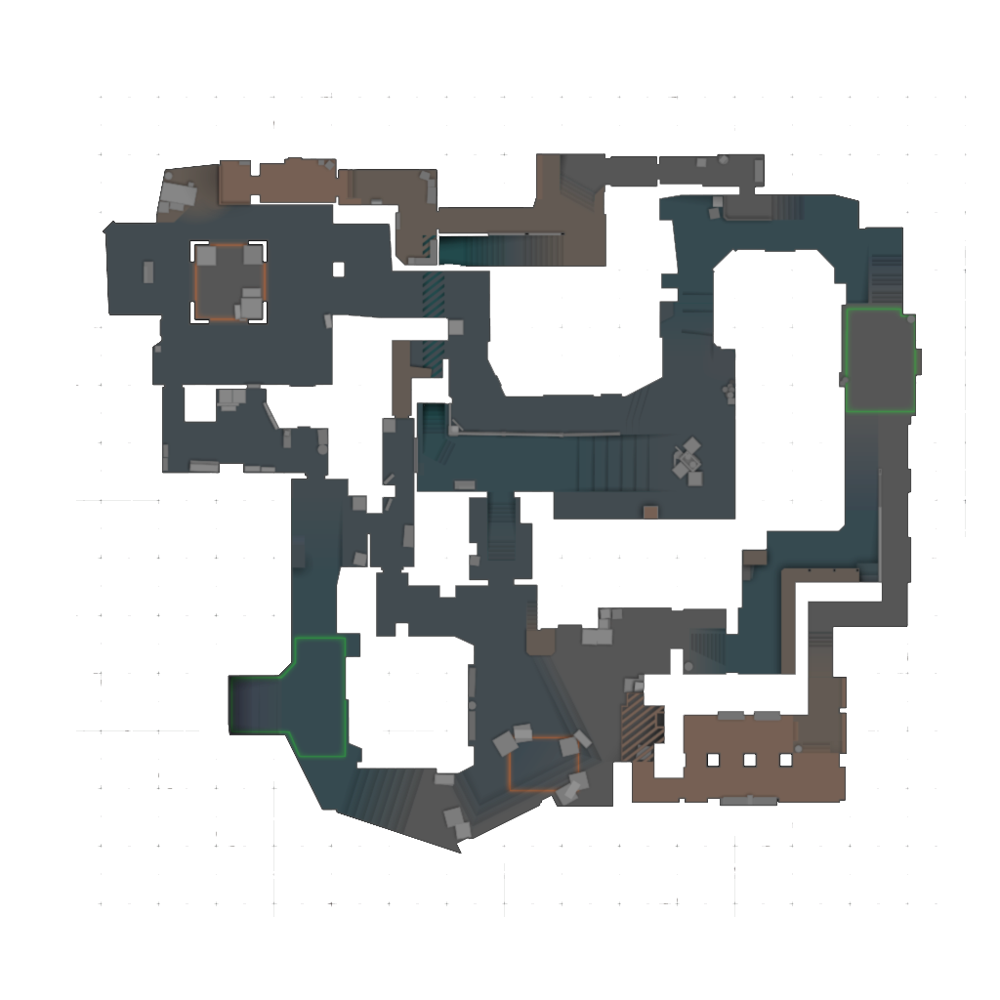

先问自己：中路有没有拿到窗口/拱门压力。
围绕中路做选择题：窗口、拱门、短箱一旦被撬开，A/B 都会被夹。
A 坡给烟火，二楼同步出，中路队友压拱门切断回防。
中路信息决定一切，A 点需要夹击，B 点怕市场回防。

调研版覆盖当前现役图和常见备用图；每张图都有专属打法 DNA 与多套进攻、防守方案。
香蕉道和二楼是两条生命线，进攻要逼道具，防守要抢信息。
垂直地图，外场烟墙和铁板声音会牵动所有轮转。
中路和洞口控制决定 A/B 夹击速度。
水路和中路能迅速切开两边包点。
A 大、A 小、中门三条线同时牵动回防。
中路拿下后，A/B 两点都会被夹出缺口。
A 厕所和 B 短水是信息核心，转点路线很长。
外场视野开阔，内场爆弹速度快，回防路线需要提前规划。